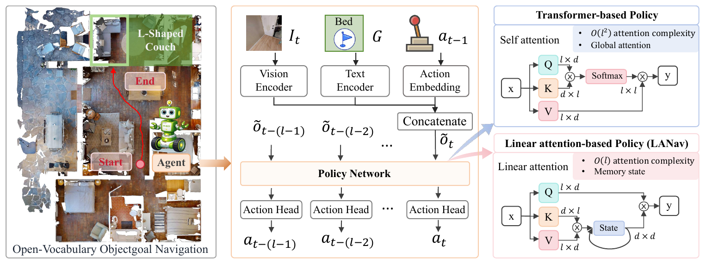

Compare the backbone
Keep the visual and language encoders and training pipeline fixed to isolate how the policy integrates its history.
Linear Attention-based Navigation
Structured recurrent memory for navigation from RGB observations and language-specified goals.
arXiv:2607.18794 · Project resources and real-world demonstration
HM3D-OVON average success
Macro-average across three validation splitsOver the matched Transformer
36.4% vs. 30.1% average success rateSuccessful real robot trials
82% success on a Unitree Go2In the real world
The policy receives an egocentric RGB image, a language-specified goal, and the previous action. A lightweight adapter translates its discrete decisions into robot motion commands.
In one indoor environment, we evaluate five object categories from two starting locations, with five repetitions per target–start pair. LANav succeeds in 41 of 50 trials (82%). The video illustrates deployment behavior.
The idea
Open-vocabulary object goal navigation requires an agent to integrate past observations while searching for language-specified objects in unfamiliar environments. We introduce Linear Attention-based Navigation (LANav), a policy that represents navigation history through structured recurrent states.
Controlled experiments with matched architectures and training settings show that linear-attention backbones outperform recurrent and Transformer baselines, and that stronger state-update rules yield better navigation performance.
Our Weighted State-Expansion Linear Attention (WSLA) expands each attention head into multiple sub-states and combines their outputs through a learnable weighted readout. LANav with WSLA reaches a 36.4% macro-averaged success rate on HM3D-OVON, improves transfer and adaptation to HSSD, and succeeds in 41 of 50 real robot trials.
Method
LANav encodes the current RGB observation, the object goal, and the previous action. A linear-attention backbone updates recurrent memory and predicts the next navigation action.

Keep the visual and language encoders and training pipeline fixed to isolate how the policy integrates its history.
Compare Linear Transformer, DeltaNet, and Gated DeltaNet to study increasingly structured memory updates.
WSLA introduces independent sub-states per attention head and learns how to combine their readouts.
Weighted state expansion
Each attention head maintains multiple sub-states. Learnable weights regulate how their outputs contribute to the final representation, increasing the expressivity of navigation memory.
Evaluation
On HM3D-OVON, WSLA achieves the highest average success rate among the reproduced backbones under matched training settings.
| Policy backbone | VAL SEEN | VAL SEEN SYN | VAL UNSEEN | Average SR | |||
|---|---|---|---|---|---|---|---|
| SR | SPL | SR | SPL | SR | SPL | ||
| GRU | 39.0 ± 0.3 | 15.0 ± 0.3 | 29.3 ± 0.3 | 11.5 ± 0.1 | 11.7 ± 0.3 | 3.8 ± 0.1 | 26.7 ± 0.2 |
| Transformer | 41.5 ± 0.3 | 21.0 ± 0.3 | 29.9 ± 0.3 | 14.5 ± 0.1 | 19.0 ± 0.3 | 7.1 ± 0.1 | 30.1 ± 0.2 |
| DAgRL | 41.3 ± 0.3 | 21.2 ± 0.3 | 29.4 ± 0.3 | 14.4 ± 0.1 | 18.3 ± 0.3 | 7.9 ± 0.1 | 29.7 ± 0.2 |
| Linear Transformer | 42.9 ± 0.5 | 18.8 ± 0.4 | 31.8 ± 0.4 | 12.9 ± 0.2 | 19.2 ± 0.3 | 7.1 ± 0.1 | 31.3 ± 0.2 |
| DeltaNet | 45.3 ± 0.5 | 21.2 ± 0.4 | 35.0 ± 0.4 | 15.1 ± 0.2 | 21.5 ± 0.4 | 7.5 ± 0.3 | 33.9 ± 0.3 |
| Gated DeltaNet | 46.6 ± 0.3 | 22.4 ± 0.3 | 36.6 ± 0.4 | 15.5 ± 0.2 | 20.5 ± 0.3 | 7.5 ± 0.2 | 34.6 ± 0.2 |
| WSLA Ours | 47.8 ± 0.4 | 22.9 ± 0.3 | 39.8 ± 0.5 | 16.2 ± 0.3 | 21.6 ± 0.4 | 8.2 ± 0.3 | 36.4 ± 0.3 |
Mean ± standard deviation over three seeds. Attention-based models use a context length of 500. Average SR is the macro-average across the three validation splits.
SR: success rate. SPL: success weighted by path length. SEEN uses training goal categories; SEEN SYN uses unseen, semantically similar names; UNSEEN uses semantically distinct unseen categories.
Across scene distributions
WSLA improves both zero-shot transfer from HM3D-OVON and adaptation with 60 million additional training steps on HSSD.
Shared chart scale: 0–70% success. Matched policy inputs, action space, context length, and evaluation metrics.
Citation
@misc{zhang2026lanav,
title = {Beyond Transformers: Linear Attention Policy for
Open-Vocabulary Object Goal Navigation},
author = {Zhang, Jiahong and Lin, Yifan and Zhang, Yandong and
Shen, Sijun and Wang, Kexin and Pan, Yuqi and
Pei, Hongjuan and Wang, Wei and Li, Guoqi},
year = {2026},
eprint = {2607.18794},
archivePrefix = {arXiv},
primaryClass = {cs.RO},
doi = {10.48550/arXiv.2607.18794},
url = {https://arxiv.org/abs/2607.18794}
}